Cripto e dinheiro, de forma prática
سواد مالی و کریپتو، کاربردیComo funcionam as blockchains, como verificar um token antes de lhe tocar e como se proteger de burlas.
 تصویرسازی
تصویرسازی
با هم، از بازار و کریپتو تا نوآوری و دستاوردهای ایرانیان را دنبال میکنیم.


Um fundo que visa até 50 mil milhões de euros para IA, quântica e chips, mais uma Lei Quântica. Como se compara, quem ganha e onde na Europa funciona melhor.
صندوق STEF و قانون کوانتوم: مقایسه با برنامههای قبلی، ذینفعان و مناطقی که بیشتر میبرند.
Ler a história

Um projeto de lei para bloquear cerca de 306 800 BTC do Estado durante 20 anos chega ao plenário da Câmara. Não compra nada, e o tempo é curto.
طرح قفل ۲۰ سالهی حدود ۳۰۶ هزار بیتکوین دولت آمریکا به صحن رسید؛ خریدی در آن نیست و وقت کم است.
Ler a história

A moeda de Babak Zanjani começa a ser negociada a 30 de novembro. Sanções, sem licença interna e pouca liquidez: é viável, credível e negociável?
معاملات از ۹ آذر؛ تحریم، نبود مجوز و نقدینگی کم. شدنی است، اعتبار دارد و کجا معامله میشود؟
Ler a história

Os serviços digitais são 56% das exportações mundiais de serviços. Que áreas pagam, onde encontrar clientes, como receber de facto o dinheiro e quão real é tudo isto.
بازار، ۱۶ حوزه، مشترییابی، اینترنت، تحریمها و راههای دریافت پول؛ و اینکه چقدر واقعی است.
Ler a história

Ainda não há uma vaga de despedimentos por IA, mas as tarefas e a porta de entrada para quem começa estão a mudar. O que dizem os dados deste ano e como ler a mudança.
اخراج گستردهای نیست، ولی وظیفهها و راه ورود تازهکارها عوض میشود. شواهد امسال و راه درست فهمیدن تغییر.
Ler a história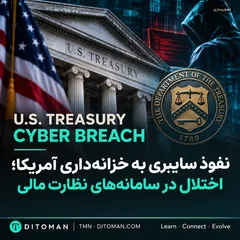

«Tesouro pirateado» tornou-se viral. A FinCEN diz que o acesso não autorizado atingiu uma parte limitada dos seus sistemas. O que está confirmado, o que não está e como ler estes títulos.
«خزانهداری هک شد» وایرال شد. FinCEN از دسترسی غیرمجاز به بخش محدودی از سامانههایش میگوید. چه چیزی تأیید شده و چه چیزی نه؟
Ler a história

A Bitcoin voltou a ficar abaixo dos 60 000 dólares, os ETF estão a perder dinheiro e o medo está em 11. Três cenários para a próxima semana e o único relatório que importa.
بیتکوین دوباره زیر ۶۰ هزار دلار است، ETFها پول از دست میدهند و ترس روی ۱۱ است. سه سناریو برای هفتهی آینده.
Ler a história

Os medicamentos para emagrecer estão a desviar dinheiro dos snacks e das pizzas para a proteína, a roupa e a saúde. Qual a dimensão do impacto, onde estão os novos mercados e onde fica o Irão?
داروهای لاغری پول را از چیپس و پیتزا به پروتئین، پوشاک و سلامت میبرند. آسیب چقدر است، بازار تازه کجاست و ایران کجا ایستاده؟
Ler a história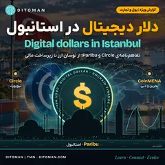
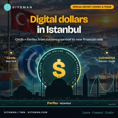
A Circle e a Paribu assinam um memorando: como funciona o dólar digital, a lição da Turquia com 85% de inflação, onde está o Irão e os empregos que aí vêm.
تفاهمنامهی Circle و Paribu: سازوکار دلار دیجیتال، درس ترکیه از تورم ۸۵ درصدی، جایگاه ایران و فرصتهای شغلی.
Ler a história

O suporte ósseo de magnésio e óxido de grafeno da Universidade de Arak: resultados de laboratório, como a Alemanha e a Coreia chegaram ao mercado, o 5.º lugar do Irão na área e o caminho até ao bloco operatório.
داربست منیزیم و گرافن اکسید دانشگاه اراک: نتایج آزمایشگاهی، تجربهی آلمان و کره، رتبهی پنجم ایران و راه تا اتاق عمل.
Ler a história

Um El Niño muito forte por cima do aquecimento de longo prazo pode fazer de 2027 um ano recorde. O que significa para os preços dos alimentos, a eletricidade, a água e o Irão.
النینوی بسیار قوی روی گرمایش بلندمدت ممکن است ۲۰۲۷ را سال رکورد کند. اثرش بر قیمت غذا، برق، آب و ایران.
Ler a história

Rússia, Arábia Saudita e Austrália são os maiores exportadores de CO2 da história; o Irão é o quinto. O dinheiro, os empregos, a lei e porque as regras climáticas atuais quase não o contam.
روسیه، عربستان و استرالیا بزرگترین صادرکنندگان کربن تاریخاند و ایران پنجم. پول، شغل، قانون و اینکه چرا قوانین فعلی تقریباً آن را حساب نمیکنند.
Ler a história

Como funcionam os cheques digitais, o roteiro do banco central para 80% de quota eletrónica, lições de Hong Kong, Singapura, Índia e Reino Unido, e como usá-los com segurança.
چک دیجیتال چطور کار میکند، نقشهی راه بانک مرکزی تا سهم ۸۰ درصدی، تجربهی هنگکنگ، سنگاپور، هند و بریتانیا و راهنمای استفادهی امن.
Ler a história

Da primeira central de 6,6 kW de Mashhad a 396 TWh por ano: história, capacidade, rede, sanções, ambiente, futuro e 40 anos comparados com 15 vizinhos.
از نیروگاه ۶٫۶ کیلوواتی مشهد تا ۳۹۶ میلیارد کیلوواتساعت: تاریخچه، ظرفیت، شبکه، تحریم، محیط زیست، آینده و مقایسه با ۱۵ همسایه.
Ler a história
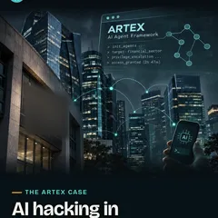
Uma ferramenta de testes de segurança usada em ataques reais a bancos sul-coreanos: o que o FBI, a CrowdStrike e a Check Point confirmaram, o que ainda não está provado e o que fazer.
ابزار آزمایش امنیت که در حملهی واقعی به بانکهای کره به کار رفت: آنچه FBI و CrowdStrike تأیید کردهاند، آنچه هنوز ثابت نشده و چه باید کرد.
Ler a história

Um país que importa 95% do gás planeia navios-central, GNL e um corredor elétrico. Os números, quem ganha, quem se preocupa e o que ainda não está provado.
کشوری که ۹۵٪ گازش وارداتی است، با نیروگاه شناور، LNG و کریدور برق میخواهد هاب شود. ارقام، برندگان، نگرانیها و آنچه هنوز ثابت نشده.
Ler a história

A China há 40 anos, há 20 e hoje: 3,4 biliões de dólares investidos no estrangeiro, 168 portos em 90 países, empréstimos, competências, e a comparação com o Reino Unido, a França, os EUA e o Japão.
چین ۴۰ سال پیش، ۲۰ سال پیش و امروز: ۳٫۴ تریلیون دلار سرمایهگذاری خارجی، ۱۶۸ بندر در ۹۰ کشور، وام، مهارت و مقایسه با بریتانیا، فرانسه، آمریکا و ژاپن.
Ler a história

Dez grandes meios online iranianos comparados: história, dinheiro, audiência, a rede nacional durante o apagão, IA e leitores no estrangeiro.
ده رسانه از نُه زاویه: تاریخچه، پول، مخاطب، شبکهی ملی در روزهای قطع اینترنت، هوش مصنوعی و خوانندهی خارج از ایران.
Ler a história

Porque as cripto caíram com as tecnológicas e o ouro: a Fed, as ações de IA, as saídas dos ETF e a geopolítica, com cenários a uma semana, quatro semanas e seis meses.
چرا کریپتو همزمان با سهام فناوری و طلا ریخت؛ با سناریوهای مثبت و منفی برای یک هفته، چهار هفته و شش ماه.
Ler a história
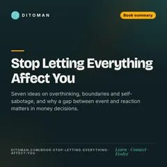
Daniel Chidiac sobre pensar demais, limites e autossabotagem, e porque um intervalo entre o acontecimento e a reação importa nas decisões de dinheiro.
کتاب دنیل چیدیاک دربارهی بیشفکری، مرزبندی و خودتخریبی؛ و اینکه چرا فاصلهی بین اتفاق و واکنش در پول هم مهم است.
Ler a história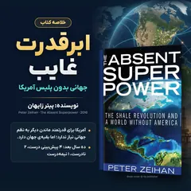
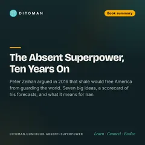
O livro de 2016 de Peter Zeihan sobre o xisto e um mundo sem a América como polícia, com um balanço das suas previsões.
کتاب پیتر زایهان دربارهی انقلاب شیل و جهانی بدون پلیس آمریکا، با کارنامهی پیشبینیهایش تا امروز.
Ler a história

Onde vivem os iranianos e porquê: um século do mapa populacional, água, infraestruturas e os próximos 20 anos.
مردم ایران کجا زندگی میکنند و چرا: صد سال نقشهی جمعیت، نقش آب، زیرساختها و ۲۰ سال آینده.
Ler a história

Um painel liderado por um Nobel apoia a prova de existência de Yang-Mills da OpenAI; o hiato de massa e o prémio de 1 milhão de dólares continuam em aberto.
تأیید اثبات هوش مصنوعی برای وجود نظریهی یانگ–میلز؛ شکاف جرمی و جایزهی یک میلیون دلاری هنوز باز است.
Ler a história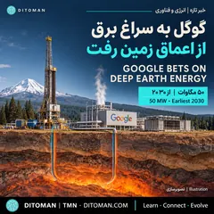

O acordo geotérmico super-quente Google–Quaise, um século de história, países líderes, o mercado e o potencial do Irão.
قرارداد گوگل و Quaise، فناوری زمینگرمایی فوقداغ، تاریخچه، بازار و ظرفیت ایران از مشکینشهر تا دماوند.
Ler a história

O que os Emirados estão a testar, onde se encaixa no Irão, como protege o solo e que empresas iranianas já o fazem.
آزمایشهای امارات، کاربرد در مناطق خشک ایران، حفاظت از خاک و شرکتهای ایرانی فعال در کشت هوشمند.
Ler a história

Micron, SK hynix, AMD, Arista e Marvell: números oficiais, estrutura acionista, a saída de Jensen Huang e cenários até 2030.
مایکرون، اسکی هاینیکس، AMD، آریستا و مارول: ارقام رسمی به دلار و تومان، مالکیت، کنارهگیری جنسن هوانگ و سناریوها.
Ler a história
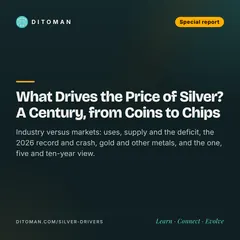
Indústria versus mercados: usos, o défice, o recorde e a queda de 2026, o ouro e outros metais, e as perspetivas.
صنعت در برابر بازار: کاربردها، کسری بازار، رکورد و سقوط ۲۰۲۶، مقایسه با طلا و چشمانداز آینده.
Ler a história

De Teerão 1943 e Ialta a Shenzhen: história, o nuclear, o que está em jogo na política, na economia e na civilização, o Irão e os cenários pela frente.
از تهران ۱۹۴۳ و یالتا تا شنژن: تاریخ، ابعاد هستهای، سیاسی، اقتصادی و تمدنی، جایگاه ایران و سناریوهای پیش رو.
Ler a história

Como se faz o pó de ouro, as máquinas e os seus preços, a economia da joalharia no Irão e a ideia de ouro redesenhável.
پودر طلا چطور ساخته میشود، دستگاهها و قیمتها، اقتصاد جواهر در ایران و ایدهی طلای قابلبازطراحی.
Ler a história

Impressoras 3D +86%, baterias +30%, robôs +26%, enquanto o retalho cresceu apenas 0,4%: o que significa para o mundo e para o Irão.
چاپگر سهبعدی ۸۶٪، باتری ۳۰٪، ربات ۲۶٪؛ در حالی که خردهفروشی فقط ۰٫۴٪ رشد کرد.
Ler a história

Um aglutinante de baterias feito de plantas e água: o mercado, as emissões, a saúde, os preços, novos negócios e a oportunidade para o Irão.
چسب باتری از گیاه و آب: بازار، گازهای گلخانهای، سلامت، قیمت، کسبوکارهای تازه و فرصت ایران.
Ler a história
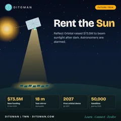
Espelhos em órbita, as contas da energia, o uso do solo, o alarme dos astrónomos e quatro cenários para o futuro.
آینههای فضایی، حساب انرژی، کاربری زمین، نگرانی اخترشناسان و چهار سناریو برای آینده.
Ler a história

O que aconteceu, quem foi afetado, porque a recuperação demorou tanto, alertas de burla e como as empresas podem ficar menos expostas.
چه اتفاقی افتاد، چه کسانی آسیب دیدند، چرا بازیابی طول کشید، هشدار کلاهبرداری و درسها برای کسبوکارها.
Ler a história

Auracast em Frankfurt, Munique e Brighton, o mercado global, a IA, as empresas, as normas e a oportunidade para o Irão.
Auracast در فرانکفورت، مونیخ و برایتون، بازار جهانی، هوش مصنوعی، شرکتها، استانداردها و فرصت صنعت صوت ایران.
Ler a história

Liquidações, alavancagem, cinco causas, uma comparação de um ano, três cenários e o que significa para investidores iranianos.
لیکوئیدیشن و اهرم، پنج دلیل سقوط، مقایسه با یک سال پیش، سه سناریوی آینده و اثر بر سرمایهگذار ایرانی.
Ler a história

Como a IA reduz o custo de abrir uma pequena empresa no Irão: marketing, conteúdos, contabilidade, questões legais, papelada, apoio ao cliente e exportação, com um plano de 30 dias.
هوش مصنوعی در بازاریابی، محتوا، حسابداری، امور حقوقی، مدارک، خدمات مشتری و صادرات؛ با حسابوکتاب واقعی و برنامهی ۳۰ روزه.
Ler a história

21 bancos globais comprometem cerca de 270 milhões de dólares com o Projeto Faro: a história, o mercado de 295 mil milhões, fintech, blockchain e o que significa para o Irão.
۲۱ بانک بزرگ جهان با حدود ۲۷۰ میلیون دلار وارد بازار استیبلکوین شدند: تاریخچه، بازار ۲۹۵ میلیارد دلاری، فینتک، بلاکچین و معنای آن برای ایران.
Ler a história

A United proibiu agentes de IA de comprar bilhetes: as razões oficiais, o «nenhum novo intermediário» do CEO, o dinheiro numa indústria de 1,165 biliões de dólares e o que isso significa para o Irão.
یونایتد خرید بلیت با هوش مصنوعی را ممنوع کرد: دلایل رسمی، «واسطهی تازه نمیخواهم»، اعداد صنعت ۱٫۱۶۵ تریلیون دلاری و فرصتها برای ایران.
Ler a história

A Europa representa metade da despesa social mundial e a sua dívida está a subir: quem paga, porque a Europa não é uma só história e as oportunidades que abre para a região.
اروپا نیمی از هزینهی اجتماعی جهان را خرج میکند: چه کسی میپردازد، چرا همهی اروپا یکی نیست و چه فرصتهایی برای منطقه ساخته میشود.
Ler a história

Inflação de dois dígitos em 46 de 50 anos: porque quem começa tarde fica mais atrás, porque não é culpa sua e o que ainda está nas nossas mãos.
تورم دو رقمی در ۴۶ سال از ۵۰ سال: چرا دیر رسیدن گران است، چرا تقصیر تو نیست و چه چیزی هنوز در اختیار ماست.
Ler a história

O que a IA transforma em quê em cinco áreas, porque os construtores de sistemas de IA se estão a tornar uma indústria e por onde pode começar um empresário.
هوش مصنوعی در پنج حوزه چه چیزی را به چه تبدیل میکند و یک تاجر یا کارخانهدار ایرانی از کجا شروع کند.
Ler a história

O CO₂ fóssil deverá descer 0,4% em 2026, enquanto o solar e o eólico chegam a 17,3% da eletricidade mundial. Trinta anos de dados e 3,4 biliões de dólares de investimento.
انتشار کربن فسیلی در ۲۰۲۶ کم میشود و خورشید و باد به ۱۷٫۳٪ برق جهان رسیدهاند؛ سی سال داده و ۳٫۴ تریلیون دلار سرمایهگذاری.
Ler a história

Os adultos compram hoje um em cada cinco brinquedos. Cinquenta anos de brinquedos, porque as crianças ainda os querem, e a oportunidade de o Irão ser um polo regional de brinquedos.
بزرگسالها حالا یکپنجم خریداران اسباببازیاند؛ ۵۰ سال تاریخ اسباببازی و فرصت ایران در بازار منطقه.
Ler a história

Shush, Rey e Hamadã estão entre dez cidades antigas que continuaram habitadas e mantiveram os seus nomes, e ligam o Irão à Síria e ao Líbano.
شوش، ری و همدان در میان ده شهر کهنیاند که هزاران سال مسکونی ماندهاند و نامشان را نگه داشتهاند.
Ler a história

40% das crianças do Reino Unido recorrem à IA para conselhos sobre dinheiro: o que perguntam, quão certas são as respostas e onde estão o Irão e os vizinhos.
۴۰٪ بچههای بریتانیایی سؤال پولی را از هوش مصنوعی میپرسند: چه میپرسند، جوابها چقدر درست است و ایران و همسایهها کجا هستند.
Ler a história

Economia significava em tempos gerir uma casa: como as famílias vivem realmente a economia, o orçamento familiar iraniano em números e as competências que usam para se aguentar.
اقتصاد از اول یعنی ادارهی خانه: دخل و خرج خانوار ایرانی با عدد و مهارتهایی که خانوادهها با آن از پس زندگی برمیآیند.
Ler a história

8 112 espécies de plantas, um século de mudança, a economia das árvores e das plantas, o Irão ao lado dos vizinhos e 21 empresas.
۸٬۱۱۲ گونهی گیاهی، صد سال تغییر، اقتصاد درخت و گیاه، مقایسه با همسایهها و ۲۱ شرکت.
Ler a história

65% dos jovens de 18 a 29 anos leem notícias primeiro online, 2,5% leem jornais em papel com frequência, e a economia é a secção mais lida.
۶۵٪ جوانها خبر را اول آنلاین میگیرند، ۲٫۵٪ اغلب روزنامهی کاغذی میخوانند و اقتصاد پرخوانندهترین صفحه است.
Ler a história

O parque automóvel do Irão, cinquenta anos de produção e importação, e a comparação com Turquia, Rússia, Paquistão, Arábia Saudita e Iraque.
ناوگان ایران، ۵۰ سال تولید و واردات، و مقایسه با ترکیه، روسیه، پاکستان، عربستان و عراق.
Ler a história

Um reator de polimerização de 40 metros construído em Xiraz para um complexo petroquímico em Asaluyeh, e as empresas por trás dele.
راکتور پلیمریزاسیون ۴۰ متری ساخت شیراز برای عسلویه، و شرکتهایی که پشت آناند.
Ler a história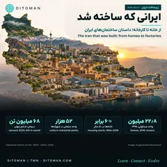

Cinquenta anos de construção em números: quase seis vezes mais casas, 52 000 unidades industriais, sexto do mundo em cimento.
۵۰ سال ساختن با عدد: خانهها نزدیک ۶ برابر، ۵۲ هزار واحد صنعتی، ششمِ جهان در سیمان.
Ler a história

França, Taiwan, Coreia do Sul e Japão: o que está confirmado, o que não está e porque os terceiros são o elo fraco.
فرانسه، تایوان، کره و ژاپن: چه تأیید شده، چه نه، و چرا شرکتهای همکار حلقهی ضعیفاند.
Ler a história
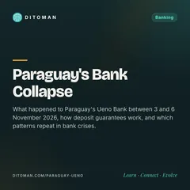
Um banco digital com 2,9 milhões de clientes foi intervencionado, o presidente afastado, e o que as garantias de depósito cobrem de facto.
بانکی با ۲٫۹ میلیون مشتری بسته شد و رئیسجمهور برکنار شد؛ ضمانت سپرده واقعاً چه چیزی را پوشش میدهد؟
Ler a história

Quem está na corrida, porque o quântico se compara à IA e ao nuclear, e o que significa para a encriptação e a Bitcoin.
چه کشورهایی در این مسابقهاند و چه اثری بر رمزنگاری و بیتکوین دارد.
Ler a história

A Economist diz que a IA turbinou os ataques informáticos. As provas, os avisos e o que os defensores têm de fazer.
شواهد، هشدارها و کاری که مدافعان باید بکنند.
Ler a história

Bitcoin, Ether e USDT para o retalho apenas através de intermediários licenciados, com um limite de 300 000 rublos.
سه رمزارز برای مردم عادی، فقط از راه واسطههای مجاز و با سقف سالانه.
Ler a história

Porque é que os produtores às vezes pagam para vender eletricidade, e porque a sua fatura não fica negativa.
چرا تولیدکننده برای فروش برق پول میدهد و چرا قبض تو منفی نمیشود.
Ler a história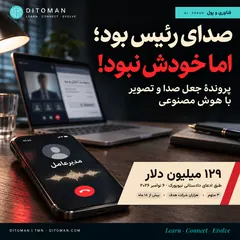

Uma fraude de 129 milhões de dólares alegadamente com vozes e rostos clonados, e três regras para se proteger.
پروندهی ۱۲۹ میلیون دلاری با جعل صدا و تصویر، و سه قانون ساده برای محافظت.
Ler a história
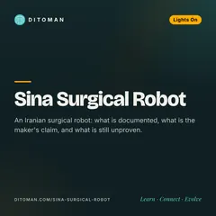
Um robô cirúrgico iraniano: o que está documentado e o que ainda é afirmação do fabricante.
از دانشگاه تا اتاق عمل؛ آنچه مستند است و آنچه هنوز ادعای سازنده است.
Ler a história
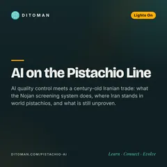
Um sistema iraniano de triagem com IA encontra um comércio de exportação centenário.
سامانهی هوشمند غربالگری آفلاتوکسین و جایگاه پستهی ایران در جهان.
Ler a história

Sair ficou 20% mais caro do que a inflação, mas os encontros gratuitos também diminuíram.
گرانی تنها مقصر نیست؛ حتی دورهمی رایگان هم کم شد.
Ler a história

Um único jazigo em Yazd contém quase tanto zinco como todas as reservas do Peru.
ذخیرهای در دل کویر یزد، هماندازهی ذخایر روی کشور پرو.
Ler a história
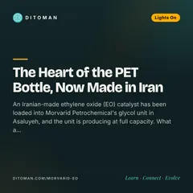
Um catalisador de EO feito no Irão faz agora funcionar a unidade de glicol da Morvarid Petrochemical à capacidade máxima.
کاتالیست ایرانی EO، واحد گلایکول پتروشیمی مروارید را با ظرفیت کامل میچرخاند.
Ler a história

Como a CinnaGen obteve a autorização de comercialização da UE para o Zandoriah.
داستان مجوز اروپایی داروی زاندوریا، ساخت سیناژن.
Ler a história
O que pode fazer, quem pode usá-lo e o que os iranianos podem aprender com isso.
چه میکند، چه کسانی از آن استفاده میکنند و چه درسی برای ما دارد.
Ler a história۳۰ درس کوتاه و دوزبانه، قدمبهقدم: از پول و تورم تا بانک، بلاکچین و هوش مصنوعی.30 lições curtas, passo a passo: do dinheiro e da inflação aos bancos, à blockchain e à IA.
Uma regra editorial permanente nos três: conhecimento real e conquistas reais, sem comentário político de nenhum lado.
Como funcionam as blockchains, como verificar um token antes de lhe tocar e como se proteger de burlas.
Análise honesta das mudanças que aí vêm, lida a partir de onde o nosso público realmente está.
Documentar o que pessoas e empresas iranianas construíram, com uma fonte para cada número.
Um mapa estruturado do que se fabrica, extrai, transporta e vê no Irão: seis ramos, os seus sub-ramos oficiais, as empresas líderes e uma fonte para cada número.


História, produtos, liderança e números, setor a setor, com uma fonte para cada número.
Loja de aplicações Android para falantes de persa; mais de 500 000 apps
فروشگاه برنامهی اندروید برای فارسیزبانان؛ بیش از ۵۰۰ هزار برنامه
Ver o registoMedicamentos biossimilares, reagentes de laboratório e proteínas recombinantes
داروهای زیستیمشابه، معرفهای آزمایشگاهی و پروتئینهای نوترکیب
Ver o registoComércio eletrónico iraniano; desde 2006
بزرگترین فروشگاه اینترنتی ایران؛ از ۲۰۰۶
Ver o registoDesenho de ASIC, SoC e FPGA; o microprocessador Aristo de 32 bits
طراحی تراشهی ASIC، SoC و FPGA؛ ریزپردازندهی ۳۲ بیتی آریستو
Ver o registoSistema cirúrgico robótico Sina
سامانهی جراحی رباتیک سینا
Ver o registoTransporte por aplicação com preços fixos; lançado em fevereiro de 2014
درخواست خودرو؛ قیمت از پیش مشخص؛ آغاز فوریهی ۲۰۱۴
Ver o registoPapel kraft e semikraft, cartão canelado e caixas, cartão; zona industrial de Yazd
کاغذ کرافت و سمیکرافت، ورق و کارتن کنگرهای، مقوا؛ شهرک صنعتی یزد
Ver o registo
Um dos maiores produtores de etileno e polietileno do Irão, em Asaluyeh, que exporta mais de 70% da produção
یکی از بزرگترین تولیدکنندگان اتیلن و پلیاتیلن ایران در عسلویه؛ بیش از ۷۰٪ محصول برای صادرات
Ver o registoPlacas e perfis de MDF revestido, painéis de parede em PVC, pedra artificial, placas de teto; Zona Franca de Anzali, Gilan
ورق و پروفیل امدیاف روکشدار، دیوارپوش پیویسی، سنگ مصنوعی و تایل سقفی؛ منطقه آزاد انزلی، گیلان
Ver o registoMedicamentos à base de plantas, cosmética, produtos alimentares e óleos essenciais; Kashan, Isfahan (fábrica perto de Qamsar)
داروی گیاهی، آرایشی و غذایی بر پایهی گیاهان دارویی؛ اسانس؛ کاشان، اصفهان (کارخانه نزدیک قمصر)
Ver o registoPasta e papel; Gilan
خمیر کاغذ و کاغذ؛ گیلان
Ver o registoÁgua de rosas, destilados de ervas, xaropes naturais e ervas secas; Cidade Industrial Amirkabir 1, Kashan
گلاب، عرقیات گیاهی، شربت طبیعی و گیاهان دارویی خشک؛ شهرک صنعتی امیرکبیر ۱، کاشان
Ver o registo«بیسوادان قرن بیستویکم کسانی نیستند که نمیتوانند بخوانند؛ کسانیاند که نمیتوانند یاد بگیرند، از یاد ببرند و دوباره یاد بگیرند.»
«Os analfabetos do século XXI não serão os que não sabem ler e escrever, mas os que não sabem aprender, desaprender e reaprender.»
A Ditoman tira o nome do toman, o nome corrente do dinheiro iraniano: um «toman digital». O TMN foi implementado na BNB Smart Chain em fevereiro de 2022 com uma pergunta por trás: pode o próprio conhecimento ter valor real?
Durante quase quatro anos mantivemo-nos deliberadamente em silêncio. Sem marketing, sem venda de tokens, sem lançamento. Essa história está na cadeia para quem a quiser verificar, e é o sinal mais claro de que isto nunca foi feito para uma subida rápida.
Lições curtas por tema, de cerca de cinco minutos cada, nas duas línguas, cada uma a terminar com um questionário.


Moedas digitais de bancos centrais e dinheiro programável: o que é real, o que é exagerado e onde está o rial digital do Irão.
Ler a liçãoLições, notícias explicadas de forma breve e atualizações, em persa e inglês. Sem sinais, sem exageros.
O TMN é o token BEP-20 por trás do Ditoman, pensado para reconhecer a aprendizagem e a contribuição reais. Não é um produto de investimento e não pedimos a ninguém que o compre.
Vários tokens sem relação usam o ticker TMN. Este é o único contrato oficial:
0x86a56e59f22Eaf3867EEeB41fB9BfA81BacE790d
نقطهضعفها را هم مینویسیم، چون درس بررسی توکن یاد میدهد دنبالشان بگردی.
Fases, não datas. Relatamos o progresso com honestidade, incluindo o que não funcionou.
Contrato verificado, propriedade renunciada, cerca de 20% da oferta fora de circulação, lições bilingues publicadas, livro branco final.
Uma comunidade no Telegram com regras reais, lições iniciais e uma entrada clara, antes de qualquer convite.
29 out 2026: toda a liquidez TMN/BNB da carteira principal do projeto bloqueada até 29 out 2027. Verificar o bloqueio · O que significa
۷ آبان ۱۴۰۵: همهی لیکوئیدیتی TMN/BNB کیفپول اصلی پروژه تا ۷ آبان ۱۴۰۶ قفل شد.
Entrada em comunidades cripto e da diáspora em língua persa, e a primeira retirada pública de oferta com prova.
Leia dez lições, passe num teste de dez perguntas e receba 500 000 TMN, para as primeiras 1 000 pessoas. Comece aqui.
ده درس را بخوان، در آزمون دهسؤالی قبول شو و ۵۰۰٬۰۰۰ TMN بگیر؛ برای ۱٬۰۰۰ نفر اول. از اینجا شروع کن.
Um projeto educativo bilingue assente em três pilares: literacia prática em cripto e finanças, análise honesta de IA, energia e o futuro do trabalho, e cobertura de conquistas reais de pessoas e empresas iranianas.
از کسی نمیخواهیم بخرد. عرضهی TMN متمرکز است. صفحهی TMN را بخوان و با همان معیارهایی بسنجش که هر توکن دیگری را میسنجی.
Não. O Ditoman é um projeto educativo. Nada aqui é aconselhamento de investimento, e as lições foram feitas para o ajudar a decidir por si.
É uma regra editorial permanente. Documentamos conhecimento real e conquistas reais, e ficamos fora do comentário político de qualquer lado.
Sim. O piloto «aprender e ganhar» está aberto: leia dez lições, passe num teste de dez perguntas e receba 500 000 TMN, para as primeiras 1 000 pessoas. Comece aqui.
بله. طرح «یاد بگیر، توکن بگیر» باز است: ده درس را بخوان، در آزمون دهسؤالی قبول شو و ۵۰۰٬۰۰۰ TMN بگیر؛ برای ۱٬۰۰۰ نفر اول. از اینجا شروع کن.
Um documento define o rumo. Leia-o antes de confiar em qualquer coisa que dizemos.
گزارشها، آموزشها و روایتهای امیدبخش، هر روز در کانالهای دیتومان.